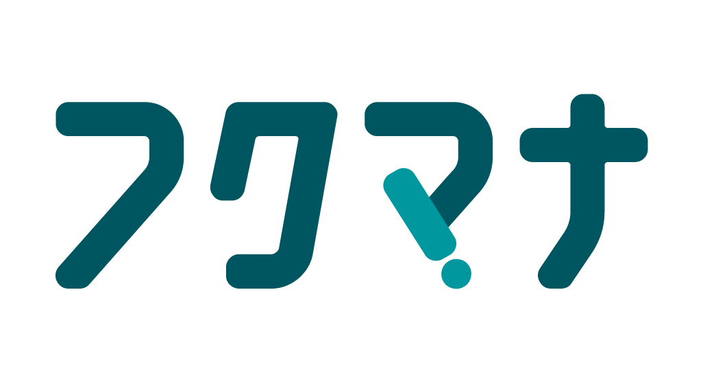

福祉経営 学びタイプ診断
経営基盤を固める経営者タイプ
数字と信頼で、法人の土台を固める経営者。
経営状況を数字でつかみ、金融機関とも上手に付き合える力は、安定した法人運営の土台です。本業の収支を見える化して職員と共有することで、組織の一体感も高まります。

福祉経営 学びタイプ診断
数字と信頼で、法人の土台を固める経営者。
経営状況を数字でつかみ、金融機関とも上手に付き合える力は、安定した法人運営の土台です。本業の収支を見える化して職員と共有することで、組織の一体感も高まります。